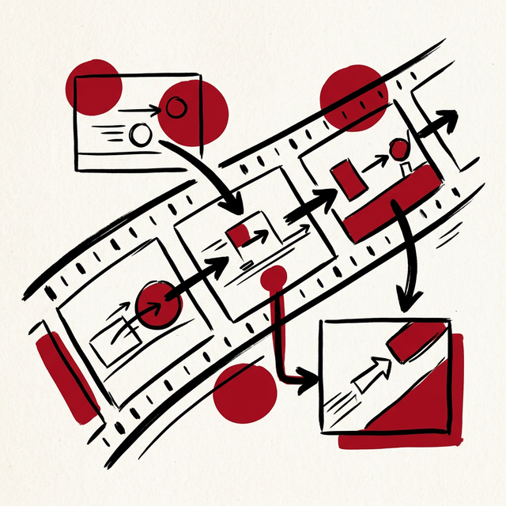
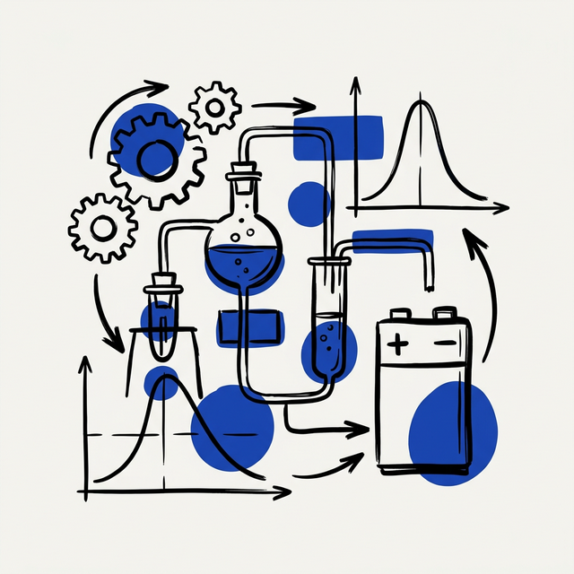
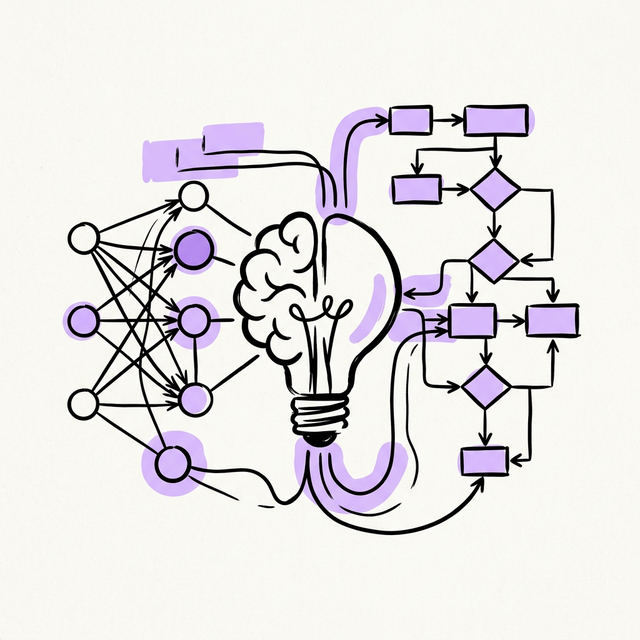

Causal Perception and Reasoning
We are the Causal Perception and Reasoning research group based in HCMC, Vietnam. Our mission is built on a simple but powerful belief — true AI must move beyond correlation-based Perception to achieve Causal Reasoning, understanding why it happens.
Our Core Research

01Causal Video Understanding
Go beyond what is happening in a video to understand why it's happening. Employ VLMs to perceive and "ground" raw video into textual events, and LLMs with causal frameworks to reason about causal triggers and dynamics.
Causal Document Intelligence
Use VLMs to understand document layout and structure as a causal graph. Employ LLMs to reason over semantic content and infer logical and causal relationships between text, tables, and figures.
Causal AI in Healthcare
Focus on causal inference for trustworthy, safe medical diagnostics. Apply VLMs to find causal biomarkers in medical images and use LLMs to extract causal insights from electronic health records.

04Physics-Informed Causal AI
Build causal models for complex physical processes such as battery degradation to discover underlying scientific mechanisms. Develop causal "digital twins" for counterfactual simulations.

05Foundations of Causal LLMs & Neuro-Symbolic AI
Investigate the causal reasoning capabilities of LLMs and VLMs. Develop novel neuro-symbolic architectures that bridge perception and logic, and build models capable of counterfactual reasoning.
Join Us
Build the future of causal AI
We are actively growing and seeking passionate collaborators to advance causal AI.
Prospective Students (PhD, Master, UG) — if you're driven to explore the why behind AI, not just the what.
Academic Partners — let's collaborate on fundamental research in Video Understanding, Document Intelligence, Healthcare, and Physics-Informed Causal AI.
+ Get in Touch